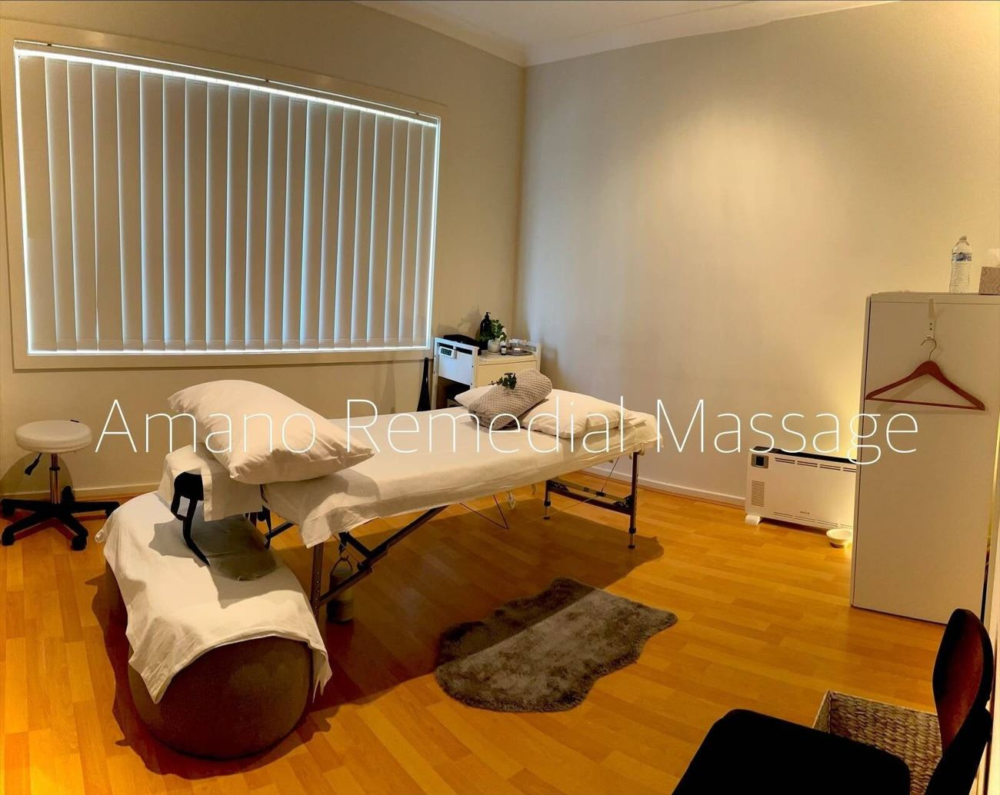

Ryde Clinic
12–14 Potts Street, Ryde NSW 2112
- Wed9:45 – 15:30
- Thu9:45 – 16:30
- Fri9:45 – 16:30
School holidays: please check by email or the online booking system.
AMANO Remedial Massage 様へのご提案用デザインです（公式サイトではありません）
Remedial massage · Dry needling · Aromatherapy — Ryde & Lane Cove
So tell me your expectations for each session, and I will adjust my treatment plan. I aim to help your body recover, move more freely, and stay in balance for the long term.
Your session
Move the slider to see what each level means.
5
Price
$95
Book thisYour therapist
I began my career as a beauty therapist in 2002, where I realised that true wellness comes not only from the outside but also from within the body. That led me to study Eastern medicine and practise acupuncture in Japan. After moving to Australia, I completed a Diploma of Remedial Massage and developed my own treatment style, blending Eastern medicine with Western remedial techniques.

The Ryde clinic
Clinics
12–14 Potts Street, Ryde NSW 2112
School holidays: please check by email or the online booking system.
1/6 Burns Bay Road, Lane Cove NSW 2066
amanoremedialmassage@gmail.com
If you are unwell with a fever or symptoms of a respiratory infection, please tell me and cancel your booking.